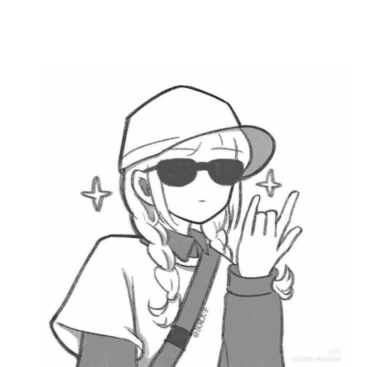

🎯Cube Quest
My Cubing Journey
👋 Hey! I'm Tanusri, I'm a student, a programmer, and a passionate speedcuber. My journey with Rubik's Cubes started a few years ago when I solved my very first 3×3 cube. What began as curiosity soon turned into a passion. Cube Quest is my personal space to track my progress, share my solves, and celebrate every achievement in this amazing journey.

I created Cube Quest to document my speedcubing journey,track my solves, and stay motivated. I hope this website inspires others to enjoy cubing andcelebrate every achievement, no matter how small.
🧩 Solved my first Rubik's Cube ⏱️ Personal Best (3×3): 32 seconds 🎯 Can solve 8 different cube puzzles 📚 Continuously learning new algorithms
🔗 WCA Profile Thanks for stopping by 🧩 — this page will keep growing as my cube journey does.
Thanks for stopping by 🧩 — this page will keep growing as my cube journey does.